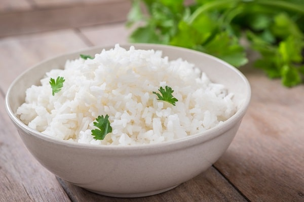
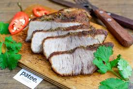

Как приготовить рис
21.01.2021
Если вы хотите сварить рассыпчатый рис, перед приготовлением его нужно промыть под холодной водой. Так вы избавитесь от крахмала, который отвечает за клейкость. Промойте рис около пяти раз или больше, пока вода не станет прозрачной. Удобнее всего выполнять эту процедуру с помощью мелкого сита.Для приготовления некоторых блюд, таких как ризотто, нужен клейкий рис. В этом случае промывать его не стоит. Либо можно ограничиться одним ополаскиванием, чтобы смыть всё лишнее.
Чтобы рис сварился быстрее, его можно замочить на 30–60 минут. Тогда время приготовления сократится почти вдвое. Однако при этом лучше уменьшить количество воды, которое используется для варки.
Среднее время варки риса:
- для белого — 20 минут;
- для пропаренного — 30 минут;
- для коричневого — 40 минут;
- для дикого — 40–60 минут.

Как правильно готовить мясо
21.01.2021
Идеальным было бы максимально сохранить соки и максимально превратить коллаген в желатин. К сожалению, это невозможно – первый процесс требует температур не выше 55–600С, а второй – выше 700С. Идеального метода, подходящего для всех типов мяса, не существует.Быстрое приготовление мяса – жарка на сковороде или гриле – подходит для вырезки, содержащей обычно мало соединительной ткани. Главное в этом случае – не допустить слишком большой разницы температур между внешней поверхностью мяса и его серединой. Для этого лучше готовить мясо в два этапа. Быстрая обжарка, образующая корочку, а затем медленное «дожаривание» при более низкой температуре уменьшают разницу температур.
Не стоит готовить мороженое мясо – в этом случае соки из разрушенных слишком быстрым нагревом клеток вытекают и мясо получится сухим. Размораживать мясо желательно медленно – например, переложив его из морозильной камеры в холодильную и подержав там день-другой.
Чтобы уменьшить разницу температур между поверхностью и серединой куска, лучше начинать готовить не охлажденное, а подогретое до комнатной температуры мясо, а также переворачивать его при жарке как можно чаще: это остужает поверхность и дает более равномерное распределение температур.
Кофеин и его положительные свойства
21.01.2021
Основной продукт, который содержится в кофе - это кофеин. Кофеин – умеренный стимулятор действия. Влияние кофеина на людей различно, в зависимости от их чувствительности к этому компоненту. Некоторые выпивают несколько чашек в день, и это никак на них не отражается, другие же могут чувствовать изменения даже от одной порции кофе. Свойство кофеина таково, что после попадания в пищеварительную систему он быстро растворяется в организме, выводясь через несколько часов после потребления. Именно поэтому у кофе отмечают мочегонный эффект.Кофеин повышает уровень дофамина в мозге, который заставляет нас чувствовать себя бодрее и веселее. Употребление кофе в умеренных количествах положительно влияет на центральную нервную систему: улучшает настроение, повышает физическую и умственную активность. Работники умственного труда, выпивающие по 2 чашки кофе в день, справляются с работой гораздо быстрее, чем их коллеги, отказавшиеся от употребления кофе – к такому выводу пришли американские исследователи, изучавшие влияние кофеина на умственные способности человека. Однако самостоятельно трудно определить благоприятную дозу. Ведь действие кофеина на каждого человека индивидуально и зависит от типа нервной системы.